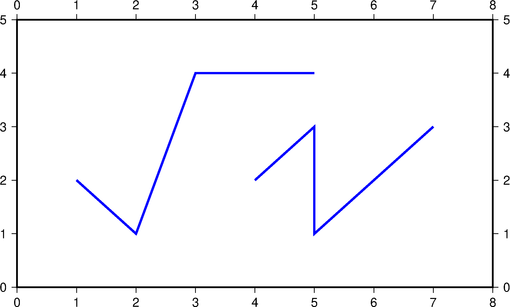
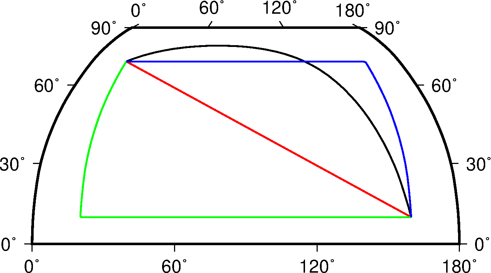
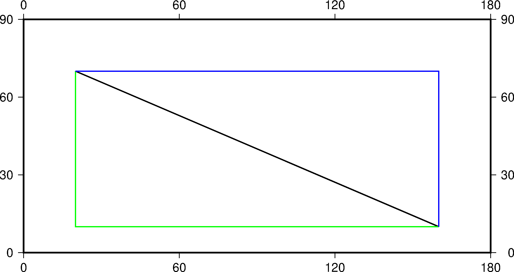
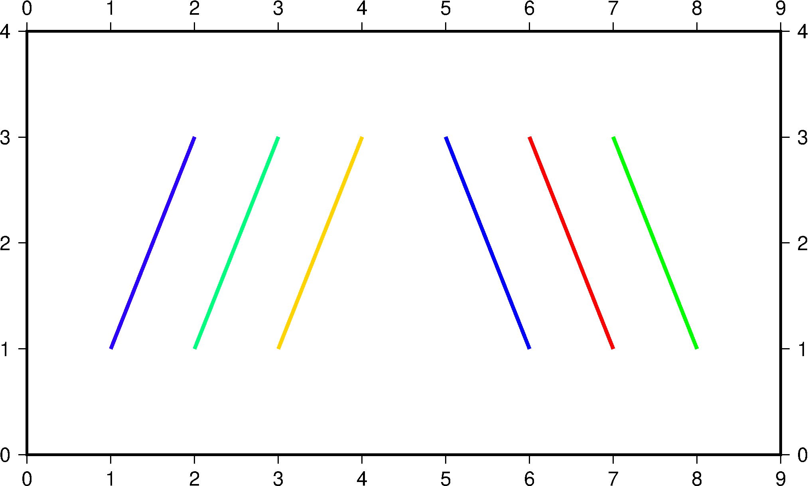

14.2 绘制线条¶
psxy 模块可以在图上绘制线段、多边形、符号。
本节主要展示如何绘制线段，线段之间如何连接，以及如何利用CPT文件绘制不同颜色的线段。
14.2.1 简单线段¶
-W 选项可以用于设置线段属性。以下示例 -W2p,blue 表示设置线段粗细为2p、颜色为蓝色：
gmt psxy -JX16c/9c -R0/8/0/5 -B1 -W2p,blue > lineSimp.ps << EOF
>
1 2
2 1
3 4
5 4
>
4 2
5 3
5 1
7 3
EOF

简单线段示例
14.2.2 不同连接方式的线段¶
-A[m|p|x|y] 可以进一步设置两点间的连接方式。
在地理坐标下，两点之间默认沿着大圆弧路径连接。下面的示例中：
- 未使用
-A表示两点之间默认沿着大圆弧路径连接，图中黑线效果。 -A表示忽略当前的投影方式，直接用直线连接两点，图中红线效果。-Am先沿着经线画，再沿着纬线画，图中绿线效果。-Ap先沿着纬线画，再沿着经线画，图中蓝线效果。
PS=lineGeo.ps
cat > input.dat << EOF
160 10
20 70
EOF
gmt psbasemap -JN90/10c -R0/180/0/90 -Bx60 -By30 -K > $PS
gmt psxy input.dat -J -R -W1p -O -K >> $PS
gmt psxy input.dat -J -R -W1p,red -A -O -K >> $PS
gmt psxy input.dat -J -R -W1p,green -Am -O -K >> $PS
gmt psxy input.dat -J -R -W1p,blue -Ap -O >> $PS

地理坐标下不同连接方式的线段
在笛卡尔坐标下，两点之间默认用直线连接。下面的示例中：
- 未使用
-A表示两点之间默认用直线连接，图中黑线效果。 -Ax表示先沿着X轴画，再沿着Y轴画，图中绿线效果。-Ay表示先沿着Y轴画，再沿着X轴画，图中蓝线效果。
PS=lineCart.ps
cat > input.dat << EOF
160 10
20 70
EOF
gmt psbasemap -JX16/8c -R0/180/0/90 -Bx60 -By30 -K > $PS
gmt psxy input.dat -J -R -W1p -O -K >> $PS
gmt psxy input.dat -J -R -W1p,green -Ax -O -K >> $PS
gmt psxy input.dat -J -R -W1p,blue -Ay -O >> $PS

笛卡尔坐标下不同连接方式的线段
14.2.3 绘制不同颜色的线段¶
当需要绘制不同颜色的线段时，可以在每段数据的头段记录中通过 -Z<val> 给每段线段赋一个值，然后利用 -C 选项指定CPT文件或者 -C<color1>,<color2>,...
语法指定Z取不同值时对应的颜色。
R=0/9/0/4
J=X16c/9c
PS=lineColo.ps
gmt makecpt -Crainbow -T-0.5/2.5/1 > lineC.cpt
gmt psbasemap -J$J -R$R -B1 -K > $PS
gmt psxy -J$J -R$R -ClineC.cpt -W2p -O -K >> $PS <<EOF
> -Z0
1 1
2 3
> -Z1
2 1
3 3
> -Z2
3 1
4 3
EOF
gmt psxy -J$J -R$R -Cblue,red,green -W2p -O >> $PS <<EOF
> -Z0
5 3
6 1
> -Z1
6 3
7 1
> -Z2
7 3
8 1
EOF

不同颜色的线段示例图
此示例中：
makecpt生成CPT文件，-T-0.5/2.5/1指定了范围为-0.5/2.5是为了与<val>相对应-ClineC.cpt表示线段颜色分别由生成的lineC.cpt文件指定-Cblue,red,green表示设置值为0、1、2的线段颜色分别为 blue, red 和 green